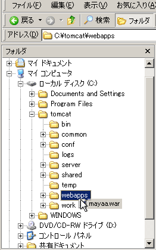
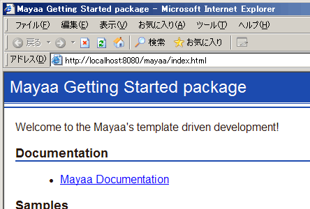

Documentation
1-2. インストールしよう
 Mayaaを入手する
Mayaaを入手する
Mayaa のパッケージは war 形式で配布していますので、war ファイルをダウンロードして Servlet コンテナに配置するだけで、Mayaa を動作させることができます。
■事前準備
Java 2 SDK および Apache Tomcat をインストールしておいてください。ここでは次の環境を想定して説明します。
想定と異なる環境を使う場合は適宜読み替えてください。チュートリアルで JSTL 1.1 を使用していますので、Servlet コンテナは JSP 2.0 に対応している必要があります。
- OS
Windows XP
- Java 2 SDK
バージョン 1.4.2_09インストール先 C:\Program Files\j2sdk1.4.2_09環境変数 JAVA_HOME="C:\Program Files\j2sdk1.4.2_09" - Apache Tomcat
バージョン 5.0.28インストール先 C:\tomcatポート番号 8080
■Mayaa のサイトから導入パッケージをダウンロードする
ダウンロードサイト ( http://mayaa.sandbox.seasar.org/downloads/ ) にアクセスし、最新版の導入パッケージをダウンロードしてください。バージョンが 1.0.0 の場合、ファイル名は
「mayaa-getting-started-1.0.0.war」です。
導入パッケージを配置し、実行する
導入パッケージを Tomcat に配置して、実際に動かしてみましょう。
URL を簡単にするため、war ファイルのファイル名を「
mayaa.war」に変更します。C:\tomcat\webappsにmayaa.warを置きます。図 1-2-1: webapps に mayaa.war を置く
C:\tomcat\bin\startup.batを実行して Tomcat を起動します。図 1-2-2: Tomcat 起動画面
起動が終わるのを待って、ブラウザで
http://localhost:8080/mayaa/index.htmlを開きます。
画面が表示されれば、配置は成功です。図 1-2-3: Mayaa Getting Started package トップページを開いたところ
